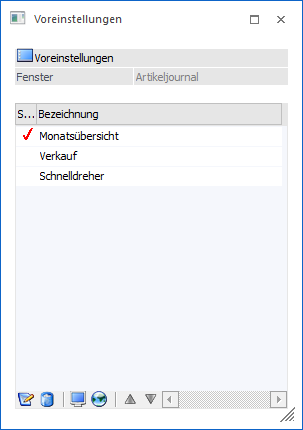
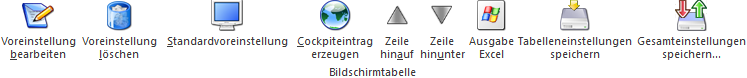

Durch Auswahl von "Voreinstellungen bearbeiten" wird das Fenster "Voreinstellungen" im Modus "Bearbeiten" geöffnet. Dort können die bereits gespeicherten Voreinstellungen bearbeitet oder auch gelöscht werden.
Hinweis
Die Auswahl "Voreinstellungen bearbeiten" steht nur zur Verfügung, wenn für das Ausgangsfenster mindestens eine Voreinstellung existiert.

Ø Fenster
An dieser Stelle wird der Name des Ausgangsfensters angezeigt.
Ø Tabelle "Voreinstellung"
In der Tabelle werden alle gespeicherte Voreinstellungen aufgeführt. Per Doppelklick in der Spalte "Standard" kann die Standard-Voreinstellung verändert werden. Zusätzlich ist eine Anpassung der Bezeichnung möglich.
Tabellenbuttons

Ø Voreinstellungen bearbeiten
Der Button "Voreinstellungen bearbeiten" bewirkt das Öffnen des VBScript-Editors. Dort kann der Inhalt der Voreinstellung direkt bearbeitet werden.
Ø Voreinstellung löschen
Durch Anwahl des Buttons "Voreinstellung löschen" wird die ausgewählte Voreinstellung gelöscht.
Ø Standardvoreinstellung
Mit Hilfe dieses Buttons wird die ausgewählte Voreinstellung als "Standard" gekennzeichnet werden, wobei es immer nur einen Standard pro Ausgangsfenster geben kann. Das besondere an eine Standard-Voreinstellung ist, dass diese sofort beim Öffnen des Ausgangsfensters geladen wird, wodurch eine manuelle Auswahl entfällt.
Ø Cockpiteintrag erzeugen
Durch Anwahl dieses Buttons wird für die ausgewählte Voreinstellung ein Cockpiteintrag im aktuellen Cockpit der WinLine START erzeugt, wenn entsprechende Objektberechtigungen vorhanden sind. Der Cockpiteintrag selber ermöglich das direkte Öffnen des Ausgangsfensters, inklusive Laden der Voreinstellungen.
Achtung
Sollten im Cockpit nicht gespeicherte benutzerspezifische Einstellungen vorhanden sein, so werden diese automatisch verworfen.
Ø Zeile hinauf / Zeile hinunter
Mit Hilfe dieser Buttons kann die Reihenfolge der Voreinstellungen verändert werden.
Ø Ausgabe Excel
Durch Anwahl des Buttons "Ausgabe Excel" wird der Inhalt der Tabelle an Microsoft Excel übergeben.
Ø Tabelleneinstellungen speichern
Die Spalten einer Tabelle können grundsätzlich an beliebige Positionen verschoben, bzw. in der Breite entsprechend angepasst werden. Durch Anwahl des Buttons "Tabelleneinstellungen speichern" werden die Einstellungen benutzerspezifisch gespeichert und bei dem nächsten Aufruf des Programmpunktes wieder vorgeschlagen.
Ø Gesamteinstellungen speichern
Im Gegensatz zu "Tabelleneinstellungen speichern" können mit "Gesamteinstellungen speichern" mehrere Tabellenaufbauten gespeichert und nach Wunsch geladen werden. Zusätzlich werden Sonderfunktionen der Tabelle (z.B. "Spalte gruppieren") ebenfalls bei der Speicherung bedacht.
Buttons
Ø Ok
Durch Anwahl des Button "Ok" bzw. der Taste F5 wird die Voreinstellung gespeichert und ggfs. ein Cockpiteintrag erzeugt.
Ø Ende
Durch Anwahl des Buttons "Ende" bzw. der Taste ESC wird das Fenster geschlossen und alle nicht gespeicherten Angaben verworfen.